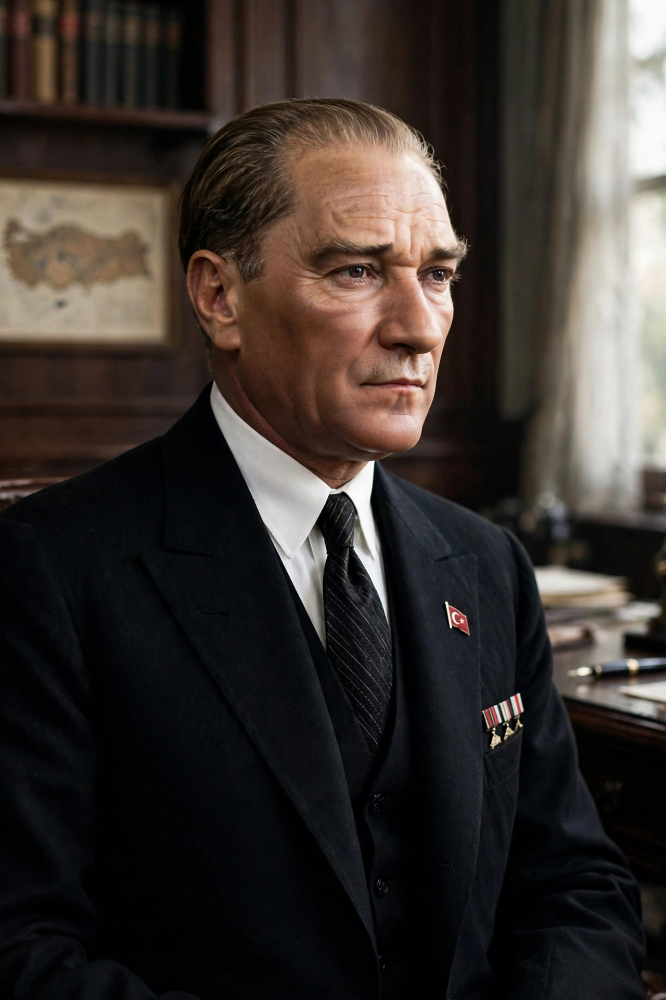

From Wikipedia, the free encyclopedia
| Mustafa Kemal Atatürk | |
| Born | c. 1881, Salonica, Ottoman Empire (now Thessaloniki, Greece) |
|---|---|
| Died | 10 November 1938 (aged 57), Dolmabahçe Palace, Istanbul, Turkey |
| Office | 1st President of Turkey (29 October 1923 – 10 November 1938) |
| Predecessor | Office established (Ottoman sultanate abolished) |
| Successor | İsmet İnönü |
| Party | Republican People's Party (CHP) |
| Rank | Mareşal (Field Marshal) |
| Resting place | Anıtkabir, Ankara |

Mustafa Kemal Atatürk (c. 1881 – 10 November 1938) was a Turkish field marshal, revolutionary statesman, author, and the founding father of the Republic of Turkey, serving as its first president from 1923 until his death in 1938. He undertook sweeping progressive reforms — political, social, legal, cultural, and economic — that modernised Turkey into a secular, industrialised nation-state. His surname, Atatürk ("Father of the Turks"), was granted to him in 1934 by the Turkish parliament and is legally reserved to him alone.
Mustafa was born in Salonica (Thessaloniki), then an Ottoman port city, to Ali Rıza Efendi, a customs official, and Zübeyde Hanım. His teacher at military school added the name Kemal ("perfection"). He graduated from the Ottoman War Academy in Istanbul in 1905 as a staff captain. He fought in the Italo-Turkish War in Libya (1911–12) and the Balkan Wars (1912–13), and rose to prominence in the First World War as commander of the 19th Division at Gallipoli, where his defence against the Allied landings of 1915 made his reputation. Later he commanded armies on the Caucasus and Palestine fronts. In 1921, after the victories of the Turkish War of Independence, the Grand National Assembly conferred on him the rank of Marshal and the title Gazi ("the Victorious").
Following the Ottoman defeat in 1918 and the Allied occupation of Istanbul, Mustafa Kemal landed at Samsun on 19 May 1919 — a date commemorated as the start of the national resistance. Rejecting the punitive Treaty of Sèvres, he built a nationalist government in Ankara, defeated Armenian forces in the east, French forces in the south, and the Greek army in the west, culminating in the Battle of Sakarya (1921) and the Great Offensive of August 1922, which retook Smyrna (İzmir). The Treaty of Lausanne (1923) recognised Turkey's independence and borders.
The Republic of Turkey was proclaimed on 29 October 1923 with Ankara as capital and Mustafa Kemal as president. His reforms (the "Kemalist revolution") included: abolition of the sultanate (1922) and caliphate (1924); a secular constitution and Swiss-derived civil code (1926) granting women equal civil standing; the Hat Law (1925) and dress reform; adoption of the Latin-based Turkish alphabet (1928), replacing the Arabic script; the Surname Law (1934); women's suffrage (1930 municipal, 1934 national) — ahead of many European states; state-led industrialisation and the founding of institutions such as the Turkish Language Association and Turkish Historical Society. His foreign policy followed the maxim "Peace at home, peace in the world," settling disputes with Greece and the European powers by diplomacy.
Atatürk died of cirrhosis of the liver at Dolmabahçe Palace in Istanbul at 09:05 on 10 November 1938; his clocks are still stopped at that hour in commemoration, and sirens sound across Turkey each year at that moment. His remains lie in the monumental mausoleum Anıtkabir in Ankara. Kemalism — republicanism, populism, nationalism, statism, secularism, and reformism, the "Six Arrows" of his Republican People's Party — remains a foundational ideology of the Turkish state, and his image is protected by law and displayed in public buildings throughout the country.